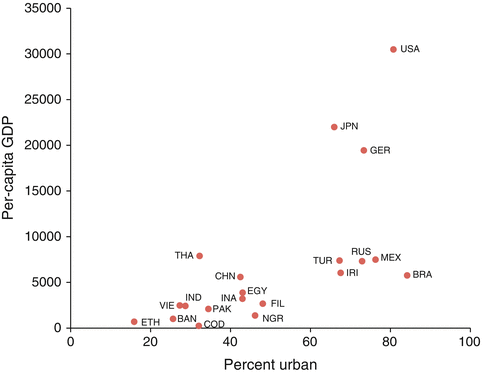
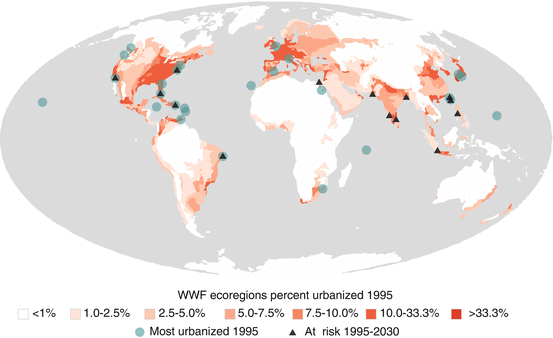
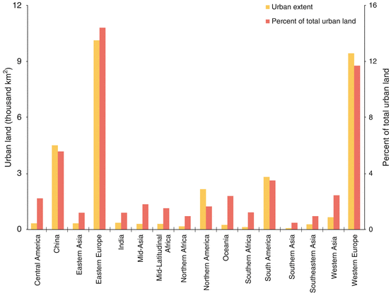
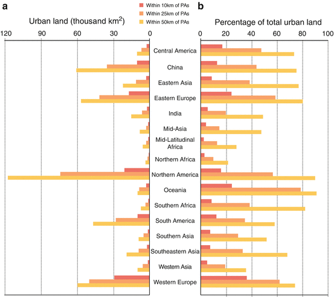
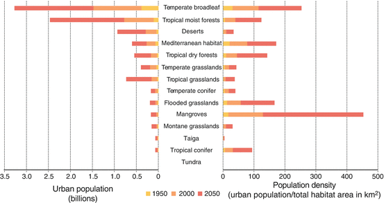
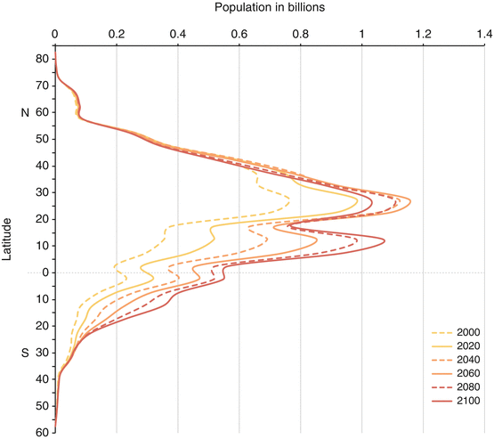
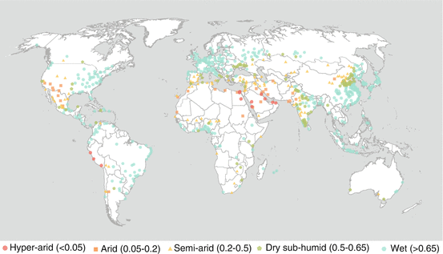
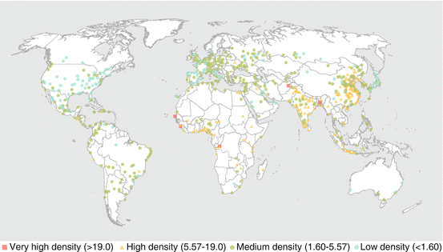
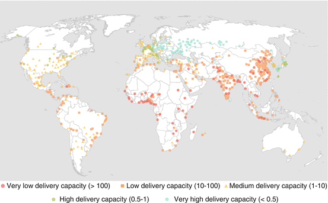

3.1 Cities Both Impact and Depend on the Environment
As highlighted in Chap. 1, city growth and the urbanization process are linked with biophysical and ecological processes. The totality of these linkages are often too daunting to track down; therefore, researchers tend to adopt one of two primary modes of analysis to dissect the interaction between cities and the environment as exemplified in the chapters of this volume.
One mode of analysis of urban/environment interactions is to focus on the impact of urban areas upon biodiversity or ecosystem services. These impacts can occur over a range of spatial scales (McDonald et al. 2009). At a very local scale, the pattern of urban development determines how natural habitat is fragmented, which affects how native biodiversity is impacted and where invasive species become established, as discussed in Chap. 10. Chapters 11 and 12 discuss specific factors affecting urban form and their implications for biodiversity and ecosystem services. For a more complete discussion of policymakers’ attitudes toward urbanization and policies that can decrease environmental impact, see Chap. 27.
A second mode of analysis of urban/environment interactions is to study the dependence of urbanites on biodiversity and ecosystem services. Dependencies can occur over a range of scales, just like impacts. To be a true ecosystem service, a desirable ecosystem process has to occur near consumers of that service (McDonald 2009). The degree to which proximity is essential—the transportability of an ecosystem service—varies from service to service. Urban street trees, for instance, provide shade to urbanites over a scale of tens of meters. At a watershed scale, many cities depend on natural habitat to provide an adequate supply of clean water. At a global level, urbanites depend on the climate regulation services supplied by ecosystems. Chapter 11 discusses many kinds of urban dependencies in detail. Chapter 25 looks at how cities depend on a stable climate and how climate change may affect them. Chapter 31 discusses how to restore ecosystem services and biodiversity when ecosystems are degraded.
In this chapter, we first focus on how global patterns of urban growth intersect with global patterns of biodiversity, which is often seen as the foundation for ecosystem service provision. We then illustrate the dependence and impact of cities on ecosystem services at the global level in the context of one of the most vital: freshwater ecosystem services.
3.2 Urbanization as a Problem and a Solution
Global urbanization has been an uneven process, both temporally and geographically (Satterthwaite 2007). The increase in the global urban population began slowly. In 1800, around 3 % of humanity lived in cities, with an estimated 1.7 % of global population in cities of 100,000 or more and 2.4 % of global population in cities of 20,000 or more. As late as 1900, the share of the world’s population living within cities of these sizes remained less than 10 % (Davis 1955). By 1950, however, estimates suggest that approximately 729 million people worldwide lived in all cities; this number corresponded to 29 % of the global population (United Nations 2010b). Subsequently global urbanization increased rapidly. By 1960 there were approximately 998 million in the world’s cities, by 1985 there were 1.98 billion, and by 2010 there were 3.49 billion. The period of the most rapid annual increases globally were experienced between 1950 and 1965, when rates exceeded 3.0 %. By 2010, the annual growth rate for global urban population had fallen to 1.85 %. This amounts to adding 67.5 million people to the urban population each year. The UN (2010a) suggests that the numbers of people moving to cities annually will continue to increase until around 2030, when more than 72 million people are predicted to be added to cities annually. Thereafter the annual additions are expected to decline (for further discussion on population projections, see Box 21.1 in Chap. 21).
In terms of geographical variability, urbanization has reached high levels in the developed world, both of which largely manifest in the temperate zone. Generally, cities in these Northern areas are now growing more slowly than those of the South and some are even contracting in terms of population (Chap. 12). At the same time, urbanization is increasing in the developing world, much of which is located in the tropics and sub-tropics. In these locations, cities are absorbing large numbers of people.
The advance of urbanization, particularly after the 1950s, has coincided with global environmental degradation, increasing consumption of natural resources, habitat loss and ecosystem change (McNeill 2000). It is therefore not surprising that analysts often depict cities as the source of many problems. Lester Brown (2001, pp. 188–190), for example, argues that “People living in cities impose a disproportionately heavy burden on the earth’s ecosystems simply because so many resources must be concentrated in urban areas to satisfy residents’ daily needs.” The ecological footprint of a city, the area required to supply its citizens with resources and services from the environment, is much larger than the area of the city itself (Wackernagel and Rees 1996).
This viewpoint of cities as a source of environmental problems, however, often rests on a relatively simple scope of analysis. A simple equation for calculating such an impact is the so-called I = PAT equation (cf., Dietz and Rosa 1997), where Impact (e.g., tons of greenhouse gases emitted) equals the number of People times the Affluence (e.g., energy consumption per capita) times the Technology (e.g., tons of greenhouse gases emitted per unit energy). If total impact from an urban area is the scope of analysis, then in most cases larger cities will cause a larger impact on the environment, for the simple reason that the population is larger. By this logic, a city of zero population size would have zero environmental impact.
However, the process of urbanization also influences both the Affluence and Technology terms in the I = PAT equation, in sometimes complex ways. Incomes tend to be greater in cities than in rural areas, and greater in bigger cities than in smaller cities (Bettencourt et al. 2007), which can sometimes increase resource consumption. However, there are often efficiencies that are gained with dense settlement. Studies in the United States, for example, have pointed out that residents of cities consume less energy per-capita and therefore generate less greenhouse gas emissions per-capita (Brown et al. 2008). Similarly, urban residents in the United States eat less beef and pork (Davis and Lin 2005a, b) than their rural counterparts. In the developing world, in contrast, those in cities consume more meat than their rural counterparts (cf., Dhakal 2009), which appears to be primarily due to the increase in income in urban households rather than changes in dietary preferences associated with living in a city (Stage 2009).
It is also, arguably, inappropriate to simply talk about the environmental impact of a city relative to some hypothetical case where the city simply disappeared. A more sophisticated analysis might specify a counterfactual scenario: what would have happened to the environment without the urbanization (McDonald and Marcotullio 2011)? These counterfactual scenarios are very difficult to construct. Without migration to cities, there might be less environmental impact from cities, but perhaps more impacts in the countryside. Economists have long suggested that urbanization has a strong positive correlation with economic activity (Williamson 1965; Annez and Buckley 2009), although rapidly growing urban areas can have offsetting negative effects through crowding, environmental degradation and by overwhelming city administrations’ capacities (cf., Bloom et al. 2007; Bai et al. 2012). Certainly, without urbanization, economic development will potentially be limited, and since rural fertility rates are generally higher, a larger total population may result than in the urbanization scenario.
As discussed in Chap. 2, urbanization is a multifaceted process, and it is very difficult to specify what would have happened to the environment in a society if urbanization did not occur. Urbanization is promoted by numerous factors, including: increased ease of communications and transport, economies of scale and agglomeration economies (Bai et al. 2012), increased personal contact among workers and entrepreneurs, and efficiency gains from the high population density in cities (for a review, see Montgomery et al. 2003). As people move to cities they leave the agricultural sector for employment in industry and services, thus substantially changing the economies of nations as they urbanize. Urbanization is also associated with changes in population structure and decreases in fertility. These dynamics bring substantial benefits for and changes to industries and society (Montgomery et al. 2003). Thus, from the perspective of the economic development and human well-being of a nation, urbanization is often an integral part of the solution.
The pragmatic truth is that a counterfactual scenario without urbanization is unlikely to ever occur. All developing economies urbanize and there are no examples of nations with high economic development that have not experienced urbanization (Fig. 3.1). Moreover, policy attempts to limit urbanization have not only had limited effects on rates of urban growth and they have had disproportionately negative impacts on large portions of societies; typically the poor. As pointed out by the UNFPA (2007), there are a growing number of economies that have implemented policies to lower migration to urban agglomerations; from 51 % in 1996 to 73 % in 2005 (cf., Bai 2008). While they have had significant negative impact on the lives of rural-to-urban migrants, these policies have had little long-term effect on urbanization and an arguable negative impact on economic growth (Bloom et al. 2007; Bai et al. 2012).

Fig. 3.1
Correlation between percent urban and per-capita GDP for the 20 countries with the greatest population in 2005. Per-capita GDP is taken from (Maddison 2001), and is shown in 1990 International Geary-Khamis dollars, a method of correction for different purchasing powers over time and space. Percent urban is taken from the World Urbanization Prospects database (UNPD 2009). Countries are abbreviated as: BAN (Bangladesh), BRA (Brazil), CHN (China), COD (Congo Kinshasa), EGY (Egypt), ETH (Ethiopia), FIL (Philippines), GER (Germany), INA (Indonesia), IND (India), IRI (Iran), JPN (Japan), MEX (Mexico), NGR (Nigeria), PAK (Pakistan), RUS (Russian Federation), THA (Thailand), TUR (Turkey), USA (United States), VIE (Vietnam)
In short, if demographic forecasts are correct, a large amount of urban growth is coming as poorer countries urbanize (for forecasts, see Chap. 21). Therefore, it is necessary to examine the types of biophysical environmental impacts expected from urbanization without forgetting that the process of economic development and urbanization can also help the world find solutions to poverty and environmental degradation.
3.3 Global Urbanization and Biodiversity
Biological diversity is an essential component of many invaluable ecosystem services for human material welfare and livelihoods. For example, many components of people’s homes are provided, regulated or supported by biodiversity, including food, the wood in the building, fresh water from taps and fuel in stoves. Nitrogen fixation is important for biological productivity, and only a few plants such as legumes can perform this service. Preserved forests close to coffee-plant flowers, provide reliable sources of pollinators, which have been estimated to improve coffee yields by 20 % (Melillo and Sala 2008). Biodiversity contributes to human security, resiliency, health and freedom of choices and actions (Millennium Ecosystem Assessment 2005). Moreover, biodiversity preservation is a goal in itself, as articulated in the Convention on Biological Diversity and many national-level laws (e.g., the Endangered Species Act in the United States).
Despite these important contributions to society, biodiversity is declining. Researchers have identified a sixth great extinction event promoted by anthropogenic activities (Wilson 2005). Human actions are fundamentally and irreversibly changing the diversity of life on the planet (Millennium Ecosystem Assessment 2005). Rates of extinction continue to increase and the number of species threatened continue to grow (Pimm et al. 1995).
In this section we examine the global impact of urbanization on biodiversity. We examine this relationship through a review of the direct impact of urban growth as well as through an examination of the indirect impacts of urbanization.
3.3.1 The Global Distribution of Biological Diversity
Biodiversity can be examined a number of different ways. In this overview we review the literature on urbanization’s impact on species richness and endemism. While species richness and endemism vary unevenly across the Earth’s surface, a number of broad trends have been observed.
Species richness is generally higher in high productivity sites like tropical rain forests and lower in low productivity sites like arctic tundra, for unclear reasons (Willig et al. 2003). The pattern of distribution is called the latitudinal geographic gradient because the highest levels of biodiversity are found near the equator and they drop off as one moves towards the poles (Turner and Hawkins 2004). This pattern holds true for major taxa (classes, orders and families) for microbes, plants and animals in both terrestrial and aquatic systems. The latitudinal gradient is superimposed on a number of other gradients including distance to coast, position within a peninsula, and topographic position (Lomolino et al. 2010).
Species endemism is the number of species unique to one location and is a major concern to conservationists. Examples of endemic species include the Devil’s Hole pupfish (Cyprinodon diabolis) from the United States, Australia’s koala (Phascolarctos cinereus) and many different species of cichlid fish found in Lakes Victoria, Tanganyika and Malawi. Endemism is distributed very differently from species richness. While species richness is low on isolated islands, endemism is high in proportional terms, as the geographic isolation of biota leads to speciation that fills empty niches. Coastal areas are also places with a high degree of marine and terrestrial endemism because of the high habitat diversity (Dirzo and Raven 2003).
3.3.2 Direct Impact of Urbanization on Biodiversity
Cities are concentrated along coastlines and some islands as well as major river systems, which also happen to be areas of high species richness and endemism. Ecologists have explained this pattern by examining the correlation between human population density and productivity (Luck 2007), while urban historians have focused on the importance of freshwater and marine trade routes for city formation.
The most direct impact of cities on biodiversity is the change in land cover associated with urban growth. Urban growth is clearly a significant global driver of land-use conversion and deforestation. Urban areas occupy approximately 3 % of the Earth’s land surface (McGranahan et al. 2006), although the actual number varies significantly depending on the definition of urban and the spatial grain of analysis (Schneider et al. 2009; Seto et al. 2010). For a discussion of the various definitions of urban, see Chap. 1.
The spatial correlation between urban growth and endemism means urban growth has already impacted biodiversity significantly (McDonald et al. 2008) analyzed the implications of urban areas circa 1995 for ecoregions (Olson et al. 2001), protected areas across the world (www.wdpa.org), and rare species (Ricketts et al. 2005). They found the effect of urban areas to be concentrated in certain localities (Fig. 3.2). The majority of terrestrial ecoregions (comprising 62 % of the Earth’s land surface) are currently less than 1 % urbanized and will experience little change through 2030. However, around 10 % of terrestrial vertebrates are in ecoregions that are heavily impacted by urbanization, even though these ecoregions only represent 0.3 % of the Earth’s land surface (Fig. 3.2). These ecoregions are concentrated along coasts and on islands, which are generally areas of high endemism (Ricketts et al. 2005). In addition, urban areas seem to have increased the threat to survival of certain vertebrate species, especially those having smaller ranges. Most of this threat is in middle and low-income countries, which raises questions about the institutional capacity to act against potential adverse effects of urban expansion on biodiversity.

Fig. 3.2
Percentage of an ecoregion’s area that was urban circa 1995; ecoregion boundaries follow those of the World Wildlife Fund (Olson et al. 2001). Ecoregions with more than one-third of their area urban in 1995 are marked. At-risk ecoregions, which will lose more than 5 % of their remaining undeveloped area by 2030, are also marked (Modified from McDonald et al. 2008, p. 1698. Published with kind permission of © Biological Conservation 2008. All Rights Reserved)
Less than 1 % of all biodiversity hotspot areas (Myers et al. 2000; Mittermeier et al. 2004) were urbanized circa 2000 (Seto et al. 2012a). However, similar to the ecoregions there is large variation in urban land cover across the biodiversity hotspots with concentration of urban lands in certain hotspots. In particular, the Mediterranean Basin and the Atlantic Forest biodiversity hotspots had the most urban area circa 2000 (over 30,000 and 25,000 km2, respectively). On the other hand, the California Floristic Province and Japan hotspots had the largest percentage of their total land urbanized (about 5 % each).
Around the year 2000, South America had the most urban land in biodiversity hotspots (about 46,000 km2, nearly 60 % of all urban land in the region) among all regions (Güneralp and Seto 2013). Nearly all the urban land in Southeastern Asia (27,000 km2) was located in biodiversity hotspots. Most of this urban land was distributed across two biodiversity hotspots: about 10,000 km2 in the Indo-Burma hotspot that covers most of the mainland portion of the region, and about 13,000 km2 in the Sundaland hotspot that includes most of the Malay Peninsula and the island of Java. Northern Africa had almost half of its total urban land in the Mediterranean hotspot, the only hotspot in the region. These patterns collectively reflect that biodiversity hotspots predominantly occupy coastal areas that are also places of concentration of urban land.
Globally, 32,000 km2 of protected areas (PAs) were already urbanized circa 2000, corresponding to 5 % of global urban land (Fig. 3.3). In particular, in Europe, which has already largely urbanized and has an extensive PA network, almost 20,000 km2 of PAs were already under urban land cover (about 10,000 and 9,500 km2 in Eastern and Western Europe, respectively). This corresponds to 13 % of total urban extent in the continent circa 2000, 14 and 12 % in Eastern and Western Europe, respectively (Fig. 3.3). China and South America also had substantial amounts of urban land within their PAs with 4,500 and 2,800 km2 in each country, respectively (i.e., 6 and 3.5 % of their respective urban lands).

Fig. 3.3
Urban extent and percentage of total urban extent that fall in the IUCN-designated protected areas (PAs) by geographic region circa 2000 (Modified from Güneralp and Seto 2013, Figure S1, p. 3 of supplementary data. Published with kind permission of © Environmental Research Letters 2013. All Rights Reserved)
Different impacts will materialize at varying distances from urban areas and ecological mechanisms often link protected areas to surrounding lands (Hansen and DeFries 2007). It is worth noting that some of these effects are positive such as recreational activities and logistical advantages provided by close proximity to ecosystem services provision areas within protected areas.
A great proportion of the world’s terrestrial protected areas are also within 50 km of a city. Almost half of the case studies (47 %) in a meta-analysis on global urban expansion are found within 10 km of a terrestrial protected area (Seto et al. 2011). Moreover, the same study found that the average annual rate of urban land expansion of these cities from 1970 to 2000 is greater than 4.7 % and not statistically significantly different from growth rates of urban areas elsewhere. Thus, urban land expansion is as likely to take place near protected land as elsewhere, and proximity of an urban area to a protected area does not necessarily slow the rate of urban land conversion.
More than 100,00 km2 of urban land (15 % of the global total) was within 10 km of a PA circa 2000 (Güneralp and Seto 2013). In North America, while there is little urban land located in PAs, the amount of urban land in close proximity to PAs is the largest among all regions. The other two regions that have a high percentage of their populations that are urban, Western Europe and Eastern Europe, also had large amounts of urban land within close proximity of their respective PAs (Fig. 3.4a). Overall, 4 and 11 out of the 16 regions had 50 % or more of their urban land within 25 and 50 km of PAs, respectively (Fig. 3.4b). On the other hand, in almost all regions except Eastern Asia and Western Europe, the percentage of lands that were urban within the 10, 25, and 50 km-wide zones around the PAs was well below 2 % circa 2000.

Fig. 3.4
(a) Urban extent and (b) percentage of total urban extent within a distance of, from top to bottom, 10, 25, and 50 km of PAs by geographic region circa 2000 (Modified from Güneralp and Seto 2013, Figure S2, p. 4 of supplementary data. Published with kind permission of © Environmental Research Letters 2013. All Rights Reserved)
Information on land-use change due to urbanization is not available over long periods of time. However, it is instructive to look at how urban population in different habitat types has changed over time (Fig. 3.5). In 1950, the habitat type with the most urban dwellers was temperate broadleaf forests, followed by tropical moist forests and Mediterranean habitat. However, a more useful proxy measure of biodiversity impact is the urban population density in a habitat type (i.e., urban population divided by the total area in a habitat type). Note that this proxy measure is much lower than the population density at which urban settlements occur, but it gives a rough sense of how many urban people are crowded into this habitat type. By this proxy measure, the Mediterranean, mangrove, and temperate broadleaf forest habitat types all have high urban population density per habitat area and hence likely have had significant impacts on biodiversity. By 2000, the number of urban dwellers increased significantly in almost all habitat types. However, the rank ordering of both urban population and urban population density per habitat area stayed similar to patterns in 1950.

Fig. 3.5
Urban population by major habitat type (left panel) and urban population per total habitat area by major habitat type (right panel). Major habitat types and boundaries are taken from the World Wildlife Fund ecoregional dataset. Urban population information for 2000 taken from the Global Urban/Rural Mapping Program. Urban population information for 1950 and 2050 were interpolated from the GRUMP data based on rates of urban population growth taken from the United Nations Population Division (2011)
The majority of the global urban population is currently located in the temperate zone (Fig. 3.6). At the turn of the twenty-first century, urban populations were largely located temperate zone between 25 and 55° North latitude. The percent of the urban population trails off approaching the equator with another small peak in the South Temperate Zone. One might argue that this pattern has actually limited urbanization’s direct impact on biodiversity to date as the tropical zones are the areas of highest concentration of different species.

Fig. 3.6
Estimates of growth of global population by latitude, 2000–2100 (Data from United Nations Department of Economic and Social Affairs, Population Division, 2010)
In the future however, urban growth patterns will change. With urban growth, urban land use will likely double (McDonald 2008), although there is significant uncertainty in predicting how much urban population and urban area will increase (Seto et al. 2010). See Chap. 21 for detailed discussion of future urbanization scenarios and Chap. 22 for discussion of the biodiversity implication of these future urbanization scenarios.
This trend is visible in predictions of urban population by major habitat in 2050 (Fig. 3.5). Urban population will increase in essentially all habitat types. There will be particularly noticeable increases in urban population in tropical moist forests, deserts and tropical grasslands. Note that in terms of urban population per habitat area, there will be significant increases in impact in mangroves, flooded grasslands, and temperate broadleaf forests. Also worth noting are impacts to tropical conifer forests, a unique habitat type found only in a relatively small area globally.
Expansion of cities also fragments the remaining blocks of natural habitat. This increases the isolation of natural habitat patches, as the average distance between them increases. Increased isolation tends to reduce population and gene flow among patches, and may break a large regional population into several discrete subpopulations. Seasonal and intergenerational migration is also restricted. Highly mobile taxa like birds are generally less affected by isolation than less mobile taxa like amphibians, although some apparently mobile species avoid moving across urban land cover (Saunders et al. 1991).
Fragmentation necessarily increases the amount of habitat that is near a habitat/non-habitat edge (Murcia 1995). This systematically alters conditions near the edge, affecting the species and processes found there (Fagan et al. 1999). For example, at forest/non-forest edges, temperature is significantly increased during the growing season due to greater solar insolation. This increases average temperatures for tens of meters into the forest interior, the equivalent change in climate to a movement of hundreds of kilometers in latitude (Smithwick et al. 2003). Roads create a particular type of edge, with particular ecological effects (Forman 2000). Road noise is a commonly studied edge effect, and has been shown to significantly alter when and how bird species sing (Rheindt 2003). Finally, biotic interactions may change near edges. Birds’ nests, for instance, are more likely to be parasitized by cowbirds when they are near an edge (Lloyd et al. 2005).
Urbanization increases the number and extent of non-native invasive species by increasing the rate of introduction events and creating areas of disturbed habitat for non-native species to become established (e.g., McDonald and Urban 2006). There is a suite of “cosmopolitan” species, skilled generalists, that are present in most cities around the world (McKinney 2006; Kuhn and Klotz 2006). Meanwhile, urbanization often leads to the loss of “sensitive” species dependent on larger, more natural blocks of habitat. The net result is sometimes termed “biotic homogenization.” Species richness in cities may actually be higher than that of rural areas, depending on the richness of the suite of cosmopolitan species relative to that in natural habitat, but global species richness declines. The flora and fauna of the world’s cities have become more similar and homogeneous over time, at least relative to the diversity of species composition prior to urbanization (Hobbs et al. 2006; Pysek et al. 2004; Grimm et al. 2008). Chapter 10 discusses this complex process in more detail.
3.3.3 Indirect Effects of Urbanization on Biodiversity
Cities may occupy a small percent of the global land area, but they contain the majority of the world’s population and are concentrated centers of activity. These activities end up shaping land-use over a far larger land area, and influence the decisions of landowners and the policy decisions of governments in ever widening geographic extents. Chapter 26 examines arguably the most important indirect effect in terms of its areal impact, the impact of cities demand for food on global land-use.
The questions remain, however, how dense settlements interact with other human activities and what would happen if cities were removed from the equation. As mentioned previously, more specific policies focused on the process associated with urbanization may provide more valuable conservation tools than a general attack on cities. Three recent research findings that demonstrate our lack of knowledge on the exact role of urbanization and how examining interactions closely may help conservation efforts.
First, a recent article argues that international trade accounts for 30 % of all global species threats (Lenzen et al. 2012). While the demand for the goods traded probably originated in many of the world cities, this study emphasized better regulation, sustainable supply-chain certification and consumer product labeling as solutions. At the same time, however, there have been all too few studies that have examined the role of urbanization, trade and the environment. Obviously what is traded matters to the outcome of these relationships. How does, for example, the growing trade in electric bicycles to specific cities in the U.S. and Europe impact the environment? Has urbanization influenced production processes to lower environmental impact? Does the concentration of population and subsequent generation of “green” ideology have any impact on individual merchandise choice? In order to understand the role of urbanization in trade’s impact on biodiversity, more study is needed to identify not only the distances of materials travel, but also where are they coming from before arriving at urban centers (Seto et al. 2012b).
A second study examined global material consumption over the past century. Researchers estimated that during this period, global materials use increased eight-fold to reach almost 60 billion tons (Gt) of materials per year (Krausmann et al. 2009). At the same time, the total population increased by four-fold. What is interesting is that is that over this century, materials use increased at a slower pace than the global economy, but faster than world population. Consequently, this research suggests that while material intensity (i.e., the amount of materials required per unit of GDP) declined, the materials use per capita doubled from 4.6 to 10.3 tons/cap/year. The role of technology and increasing wealth in these increases is clear. What is much less clear is the role of the growth of cities. During the past century the urban population increased approximately 18-fold. What was the urban impact on materials consumption? On one hand, cities may have helped to increase the rate of consumption through infrastructure development. Certainly, studies have demonstrated the large flows of material into cities as they grow (Decker et al. 2000; Kennedy et al. 2007). On the other hand, given that this infrastructure is shared by large numbers of people, urbanization could have slowed overall material consumption growth. That is, if populations were not densely organized, the levels of materials consumed may have been much larger. These questions suggest that cities and the urbanization process may have beneficial aspects that lower overall consumption levels.
Finally, a third research project examined the role of households rather than population in resource consumption and biodiversity loss. In this case analysts examined the decreasing size of households around the world and the impact of this trend on biodiversity (Liu et al. 2003). This research suggests that even when population size decreased in some locations, the number of households increased with subsequent increases in impacts. This work places the burden of responsibilities on the decreasing size of households (which increases demands for housing), rather than on urban population. The process of urbanization is often associated with economic development, which is in turn associated with smaller household size, but teasing out causality here is difficult.
These examples demonstrate that the indirect processes by which urbanization affects biodiversity loss are unclear, but potentially quite significant. Moreover, in many analyses it is difficult to separate the effect of urbanization per se from other confounding processes, like economic development and changes in demographics.
3.4 Global Urbanization and Freshwater Ecosystem Services
There are many different types of freshwater ecosystem services that cities depend on. Land cover in watersheds (including natural habitats) affects rates of evapotranspiration and hence the quantity of surface or groundwater available. In some cases, natural habitats have lower rates of evapotranspiration than anthropogenic land cover, while in other cases the converse is true. In certain climates, trees can also play an important role in increase precipitation, as fog settles out of the air on to foliage.
Land cover also affects many factors that impact water quality, including erosion, nutrient loading, and biogeochemical cycling. In many cases, natural habitats have lower rates of erosion and a greater capacity to absorb excess nutrients and other pollutants than anthropogenic habitats.
Thus, urbanization affects land cover, which in turn affects the quantity and quality of water available. But urbanization also requires water. Water is directly needed for human use, and supports a variety of other secondary ecosystem services (e.g., recreation, biodiversity, transportation). Globally, water consumption is greatest from the agricultural sector. The energy sector, however, withdraws a large amount of water for use in extracting and processing natural resources (e.g., coal, and cooling thermoelectric power plants). Urban consumption of food and energy contributes to increased water use in agriculture and energy, so in a certain sense a true accounting of cities’ water use requires consideration of these linkages. For instance, the main water use of Chinese cities comes from the water needed to mine coal and burn it in thermoelectric power plants.
Urban residents need water for their daily activities (drinking, cooking, cleaning) as well as disposal of human wastes through sanitation systems. Per-capita water use substantially varies among cities. Within the United States for instance, residents in San Diego, CA use 700 l/person/day, while residents in Reno, NV use 1,166 l/person/day. Per-capita domestic water use tends to increase as the average income increases (FAO 2011). For example, the average resident of Indonesia ($3,900 GDP/capita, in purchasing power parity) uses 28.9 m3/person/year, while the average resident of Canada ($40,200 GDP/capita) uses 276.0 m3/person/year. The overall correlation between per-capita domestic water use and per-capita GDP is fairly high (R = 0.59). There are at least two reasons for the increase in water consumption with income. First, poorer cities are more likely to have substantial populations without access to drinking water, decreasing aggregate demand for water. For instance, 27.6 % of Sub-Saharan urban residents lack access to clean drinking water, 12.3 % of Latin American and Caribbean urban residents, and essentially 0 % of urban residents in the United States (UN-HABITAT 2006). Second, richer urban residents have access to technology that requires significant water to run, such as dishwashers and washing machines.
Three things must happen to ensure provision of fresh, clean water to urban inhabitants (McDonald et al. 2011a). First, enough water must be available. Availability, the absolute amount of surface or groundwater within a region that can be sustainably appropriated for urban use, is largely a function of climatic setting and land cover in the watershed. Second, the water must be of sufficient quality for use. Water that is polluted, either by upstream users or through pollution in situ, must be treated and purified before use in urban households. Third, a system must be in place to deliver that water to urban residents, usually via infrastructure such as piped water supplies, dams and canals, and wells.
Water availability is most likely to be a problem in cities in arid climates. One study (McDonald et al. 2011a) found that 21.7 % of urban dwellers, some 523 million, live in climates that would at least be classified as semiarid (Fig. 3.7). In the developed world these cities are clustered in the western United States, Australia, and parts of Spain. In the developing world most of these cities are located in northwestern Mexico, coastal Peru and Chile, North Africa, the Sahara, Namibia, the Middle East, and central Asia (see Fig. 3.7 for a map).

Fig. 3.7
Water availability for the world’s cities. Water availability is measured by the aridity index, which is the ratio of precipitation to potential evapotranspiration (Adapted from McDonald et al. 2011a)
Water quality is most often a problem globally when there is significant human water use upstream. One useful proxy measure is the population density upstream, which correlates to several measures of water quality. One study (McDonald et al. 2011a) found that 890 million (36.9 % of the population of cities >50,000), are in cities with an upstream population density greater than 5.5 people/ha, the population threshold at which human activities often lead to nitrate concentrations that exceed the U.S. drinking water standard of 10 mg/l. Water quality issues affect all continents (Fig. 3.8), but tend to be concentrated in major river basins like the Ganges (India) and the Yellow River (China).

Fig. 3.8
Water quality for the world’s cities. Water quality is measured as the density of people in upstream contributing areas (people/km2), with population density and water quality exhibiting a negative correlation (Adapted from McDonald et al. 2011b)
Water delivery is most a problem in rapidly growing cities with few financial resources. One study (McDonald et al. 2011a) found that 1.3 billion people (53.9 % of all urban population worldwide) live in cities with more than ten new residents per GDP per capita, mainly in sub-Saharan Africa, the Indian subcontinent, and Southeast Asia (Fig. 3.9). In contrast, some cities in developed countries have less than 0.5 new people per GDP per capita, and thus have roughly 20 times more financial capacity to deliver water to new urban residents than might a developing world city.

Fig. 3.9
Water delivery capacity for the world’s cities. The ability of a city to delivery water to its citizens is measured as the number of people expected divided by per-capita GDP (Adapted from McDonald et al. 2011b)
Cities have two broad sets of strategies to cope with insufficient water: those that involve building infrastructure to obtain more water than is currently available, and those that involve making wiser use of existing supplies.
The most common way cities try to obtain more water is tapping into groundwater to meet urban water needs. Groundwater use is sustainable if the rate of aquifer recharge exceeds the rates of withdrawals. However, for many arid cities, groundwater use exceeds the low rates of aquifer recharge. Mexico City has so overused its aquifer that the ground is subsiding 40 cm/year in some areas (Carrera-Hernandez and Gaskin 2007). Many other fast-growing cities face similar problems, but globally the extent of this groundwater mining by cities is unknown.
One common way cities try to make wiser use of existing supplies is by increasing water use efficiency, reducing the amount of water lost to leaks and trying to reduce per-capita water use for common tasks such as bathing and flushing the toilet. Another way is to improve watershed management upstream of reservoirs to prevent sedimentation and pollution from reaching reservoirs.
3.5 Summary and Conclusions
The broad global picture presented in this chapter suffices to show that global patterns of urbanization have had significant implications for biodiversity. In particular, urbanization as a driver of habitat conversion is already important and is expected to increase in importance in the future. Thus, urbanization is relevant to the Convention on Biological Diversity (CBD)’s Aichi Target 5 (By 2020, the rate of loss of all natural habitats, including forests, is at least halved and where feasible brought close to zero, and degradation and fragmentation is significantly reduced).
Habitat conversion driven by urbanization will be particularly important in tropical areas in the future and in coastal and island systems, as well as biomes that are disproportionately urbanized (e.g., Mediterranean habitat). CBD’s Aichi Target 11 (By 2020, at least 17 % of terrestrial and inland water, and 10 % of coastal and marine areas, especially areas of particular importance for biodiversity and ecosystem services, are conserved through effectively and equitably managed, ecologically representative and well-connected systems of protected areas and other effective area-based conservation measures, and integrated into the wider landscapes and seascapes) is unlikely to be met without addressing urbanization impacts in these places.
Similarly, the global analysis presented in this chapter shows that global urban growth will have significant implications for freshwater ecosystem services. Global urbanization will indirectly increase cities dependence on freshwater ecosystem services that control water quantity, quality, and timing. This has relevance to Millennium Development Goal’s 7.B: (Reduce biodiversity loss, achieving, by 2010, a significant reduction in the rate of loss) and 7.C (Halve, by 2015, the proportion of the population without sustainable access to safe drinking water and basic sanitation). The remaining chapters will examine in more detail how cities depend on ecosystem services.
Finally, we suggest that urbanization should not be examined and framed solely as a problem or as a solution. It is dangerous for policymakers to consider urbanization solely as a problem, since it is an unavoidable part of economic development. A more useful way to think about global urbanization is as posing a series of social environmental challenges that must be overcome to achieve sustainability.
References
Annez, P. C., & Buckley, R. (2009). Urbanization and growth: Setting the context. In M. Spence, P. C. Annez, & R. M. Buckley (Eds.), Urbanization and growth. Commission on growth and development (pp. 1–45). Washington, DC: The World Bank.
Bai, X. (2008). Urban transition in China: Trends, consequences, and policy implications. In G. Martin, G. McGranahan, M. Montgomery, & R. Fernandez-Castilla (Eds.), The new global frontier: Urbanization, poverty, and environment in the 21st century (pp. 339–356). London: Earthscan.
Bettencourt, L., Lobo, J., Helbing, D., Kuhnert, C., & West, G. (2007). Growth, innovation, scaling, and the pace of life in cities. Proceedings of the National Academy of Science, 104(17), 7301–7306.CrossRef
Bloom, D. E., Canning, D., & Fink, G. (2007). Urbanization and the wealth of nations. Science, 319(5864), 772–775.CrossRef
Brown, L. R. (2001). Eco-economy: Building an economy for the earth. New York/London: W.W. Norton & Company.
Brown, M. A., Southworth, F., & Sarzynski, A. (2008). Shrinking the carbon footprint of metropolitan America. Washington, DC: Brooking Institute.
Carrera-Hernandez, J. J., & Gaskin, S. J. (2007). The Basin of Mexico aquifer system: Regional groundwater level dynamics and database development. Hydrogeology Journal, 15(8), 1577–1590.CrossRef
Davis, K. (1955). The origin and growth of urbanization in the world. The American Journal of Sociology, 60(5), 429–437.CrossRef
Davis, C. G., & Lin, B.-H. (2005a). Factors affecting US beef consumption (Electronic Outlook Report from the Economic Research Services, LDP-M-135-02). Washington, DC: USDA.
Davis, C. G., & Lin, B.-H. (2005b). Factors affecting US pork consumption (Electronic Outlook Report from the Economic Research Services, LDP-M-130-01). Washington, DC: USDA.
Decker, E. H., Elliott, S., Smith, F. A., Blake, D. R., & Rowland, F. S. (2000). Energy and material flow through the urban ecosystem. Annual Review of Energy and Environment, 25, 685–740.CrossRef
Dhakal, S. (2009). Urban energy use and carbon emissions from cities in China and policy implications. Energy Policy, 37(11), 4208–4219.CrossRef
Dirzo, R., & Raven, P. H. (2003). Global state of biodiversity and loss. Annual Review of Environment and Resources, 28, 137–167.CrossRef
Fagan, W. E., Cantrell, R. S., & Cosner, C. (1999). How habitat edges change species interactions. American Naturalist, 153(2), 165–182.CrossRef
FAO. (2011). AQUASTAT database. Rome: Food and Agriculture Organization, Water Resources Development and Management Service.
Forman, R. (2000). Estimate of the area affected ecologically by the road system in the United States. Conservation Biology, 14, 31–35.CrossRef
Güneralp, B., & Seto, K. C. (2013). Futures of global urban expansion: Uncertainties and implications for biodiversity conservation. Environmental Research Letters, 8, 014025.CrossRef
Hobbs, R. J., Arico, S., Aronson, J., Baron, J. S., Bridgewater, P., Cramer, V. A., Epstein, P. R., Ewel, J. J., Klink, C. A., Lugo, A. E., Norton, D., Ojima, D., Richardson, D. M., Sanderson, E. W., Valladares, F., Vila, M., Zamora, R., & Zobel, M. (2006). Novel ecosystems: Theoretical and management aspects of the new ecological world order. Global Ecology and Biogeography, 15(1), 1–7.CrossRef
Kennedy, C., Cuddihy, J., & Engel-Yan, J. (2007). The changing metabolism of cities. Journal of Industrial Ecology, 11(2), 43–59.CrossRef
Krausmann, F., Gingrich, S., Eisenmenger, N., Erb, K.-H., Haberl, H., & Fischer-Kowalski, M. (2009). Growth in global materials use, GDP and population during the 20th century. Ecological Economics, 68(10), 2696–2705.CrossRef
Kuhn, I., & Klotz, S. (2006). Urbanization and homogenization – Comparing the floras of urban and rural areas in Germany. Biological Conservation, 127(3), 292–300.CrossRef
Lloyd, P., Martin, T. E., Redmond, R. L., Langner, U., & Hart, M. M. (2005). Linking demographic effects of habitat fragmentation across landscapes to continental source-sink dynamics. Ecological Applications, 15(5), 1504–1514.CrossRef
Lomolino, M. V., Riddle, B., Whittaker, R. J., & Brown, J. H. (2010). Biogeography (4th ed.). Sunderland: Sinauer Associates, Inc. Publishers.
Maddison, A. (2001). The world economy: A millennial perspective. Paris: Organization for Economic Cooperation and Development.CrossRef
McDonald, R. I. (2008). Global urbanization: Can ecologists identify a sustainable way forward? Frontiers in Ecology and the Environment, 6(2), 99–104.CrossRef
McDonald, R. I. (2009). Ecosystem service demand and supply along the urban-to-rural gradient. Journal of Conservation Planning, 5, 1–14.
McDonald, R. I., & Marcotullio, P. (2011). Global effects of urbanization on ecosystem services. In J. Niemelä (Ed.), Handbook of urban ecology. Oxford: Oxford University Press.
McDonald, R. I., & Urban, D. L. (2006). Edge effects on species composition and exotic species abundance in the North Carolina piedmont. Biological Invasions, 8, 1049–1060.CrossRef
McDonald, R. I., Kareiva, P., & Forman, R. (2008). The implications of urban growth for global protected areas and biodiversity conservation. Biological Conservation, 141, 1695–1703.CrossRef
McDonald, R. I., Forman, R. T. T., Kareiva, P., Neugarten, R., Salzer, D., & Fisher, J. (2009). Urban effects, distance, and protected areas in an urbanizing world. Landscape and Urban Planning, 93, 63–75.CrossRef
McDonald, R. I., Green, P., Balk, D., Fekete, B., Revenga, C., Todd, M., & Montgomery, M. (2011b). Urban growth, climate change, and freshwater availability. Proceedings of the National Academy of Sciences, 108(15), 6312–6317.CrossRef
McGranahan, G., Marcotullio, P., Bai, X., Balk, D., Braga, T., Douglas, I., Elmqvist, T., Rees, W. E., Satterthwaite, D., Songsore, J., & Zlotnik, H. (2006). Urban systems. In R. Hassan, R. Scholes, & N. Ash (Eds.), Ecosystems and human well-being: Current state and trends (Vol. 1). Washington, DC: Island Press.
McKinney, M. L. (2006). Urbanization as a major cause of biotic homogenization. Biological Conservation, 127(3), 247–260.CrossRef
McNeill, J. R. (2000). Something new under the sun, an environmental history of the twentieth-century world. New York: W.W. Norton and Company.
Melillo, J., & Sala, O. (2008). Ecosystem services. In E. Chivian & A. Bernstein (Eds.), Sustaining life, how human depends on biodiversity (pp. 75–117). New York: Oxford University Press.
Millennium Ecosystem Assessment. (2005). Ecosystems and human well-being: Biodiversity synthesis. Washington, DC: World Resources Institute.
Mittermeier, R. A., Robles-Gil, P., Hoffmann, M., Pilgrim, J. D., Brooks, T. B., Mittermeier, C. G., Lamoreux, J. L., & Fonseca, G. A. B. (2004). Hotspots revisited: Earth’s biologically richest and most endangered ecoregions. Mexico City: CEMEX.
Montgomery, M., Stren, R., Cohen, B., & Reed, H. E. (2003). Cities transformed: Demographic change and its implications in the developing world. Washington, DC: National Academies Press.
Murcia, C. (1995). Edge effects in fragmented forests – Implications for conservation. Trends in Ecology & Evolution, 10(2), 58–62.CrossRef
Olson, D. M., Dinerstein, E., Wikramanayake, E. D., Burgess, N. D., Powell, G. V. N., Underwood, E. C., D’amico, J. A., Itoua, I., Strand, H. E., Morrison, J. C., Loucks, C. J., Allnutt, T. F., Ricketts, T. H., Kura, Y., Lamoreux, J. F., Wettengel, W. W., Hedao, P., & Kassem, K. R. (2001). Terrestrial ecoregions of the world: A new map of life on earth. BioScience, 51(11), 933–938.CrossRef
Pysek, P., Chocholouskova, Z., Pysek, A., Jarosik, V., Chytry, M., & Tichy, L. (2004). Trends in species diversity and composition of urban vegetation over three decades. Journal of Vegetation Science, 15(6), 781–788.
Rheindt, F. E. (2003). The impact of roads on birds: Does song frequency play a role in determining susceptibility to noise pollution? Journal Fur Ornithologie, 144(3), 295–306.
Ricketts, T. H., Dinerstein, E., Boucher, T., Brooks, T. M., Butchart, S. H. M., Hoffmann, M., Lamoreux, J. F., Morrison, J., Parr, M., Pilgrim, J. D., Rodrigues, A. S. L., Sechrest, W., Wallace, G. E., Berlin, K., Bielby, J., Burgess, N. D., Church, D. R., Cox, N., Knox, D., Loucks, C., Luck, G. W., Master, L. L., Moore, R., Naidoo, R., Ridgely, R., Schatz, G. E., Shire, G., Strand, H., Wettengel, W., & Wikramanayake, E. (2005). Pinpointing and preventing imminent extinctions. Proceedings of the National Academy of Sciences of the United States of America, 102(51), 18497–18501. doi:10.1073/pnas.0509060102.PubMedCrossRef
Satterthwaite, D. (2007). The transition to a predominantly urban world and its underpinnings (IIED human settlements discussion paper series). London: International Institute for Environment and Development (IIED).
Saunders, D. A., Hobbs, R. J., & Margules, C. R. (1991). Biological consequences of ecosystem fragmentation: A review. Conservation Biology, 5, 18–32.CrossRef
Schneider, A., Friedl, M. A., & Potere, D. (2009). A new map of global urban extent from MODIS satellite data. Environment Research Letters, 4, 0044003.CrossRef
Seto, K. C., Sanchez-Rodriguez, R., & Fragkias, M. (2010). The new geography of contemporary urbanization and the environment. Annual Review of Environment and Resources, 35, 167–194.CrossRef
Seto, K. C., Reenberg, A., Boone, C. G., Fragkias, M., Haase, D., Langanke, T., Marcotullio, P., Munroe, D. K., Olah, B., & Simon, D. (2012b). Urban land teleconnections and sustainability. Proceedings of the National Academy of Science, 109(18), 7687–7692. doi:10.1073/pnas.1117622109.CrossRef
Smithwick, E., Harmon, M., & Domingo, J. (2003). Modeling multiscale effects of light limitations and edge-induced mortality on carbon stores in forest landscapes. Landscape Ecology, 18(7), 701–721.CrossRef
Stage, J. (2009). Is urbanization contributing to higher food prices? London: International Institute for Environment and Development.
Turner, J., & Hawkins, B. (2004). The global diversity gradient. In M. Lomolino & L. Heaney (Eds.), Frontiers of biogeography: New directions in the geography of nature. Sunderland: Sinauer Associates.
UNFPA. (2007). State of the world population 2007: Unleashing the potential urban growth. New York: United Nations Population Fund.
UN-HABITAT. (2006). State of the world’s cities. New York: United Nations Human Settlements Programme.
United Nations. (2010a). World urbanization prospects: 2009 revisions. New York: DESA, UN.
United Nations. (2010b). World urbanization prospects: The 2009 revisions. New York: Department of Economic and Social Affairs.
UNPD. (2009). World urbanization prospects: The 2009 revision. New York: United Nations Population Division.
UNPD. (2011). World urbanization prospects: The 2011 revision. New York: United Nations Population Division.
Wackernagel, M., & Rees, W. (1996). Our ecological footprint. Gabriola Island: New Society Publishers.
Williamson, J. G. (1965). Regional inequality and the process of national development: A description of the patterns. Economic Development and Cultural Change, 13(4), 1–84.CrossRef
Willig, M. R., Kaufman, D. M., & Stevens, R. D. (2003). Latitudinal gradients of biodiversity: Pattern, process, scale, and synthesis. Annual Review of Ecology, Evolution, and Systematics, 34, 273–309.CrossRef
Wilson, E. O. (2005). The future of life. New York: Alfred A. Knopf.